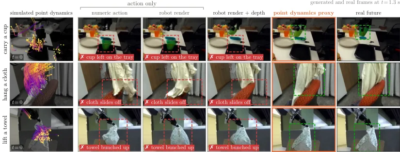
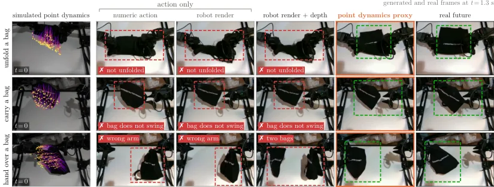

点动力学作为机器人世界模型的代理
Point Dynamics as Proxy for Robotic World Models
一句话：先让点动力学模拟「物体怎么动」，再让视频模型只负责「看起来怎样」，交互保真度就上来了。
object motion error
real robot
non-rigid
作者、单位与技术谱系 · Research context
作者与单位
研究脉络
- PointWorld方法基座关系：提供场景级点动力学模拟器，直接预测机器人动作下的每点位移。[PointDynamics 原文 §3.2]
- Wan2.2 / Ctrl-World方法基座关系：两个不同架构的视频渲染器，用来证明代理的收益不依赖单一 backbone。[PointDynamics 原文 §4.1]
- Code world models / 物理仿真生成方法上游关系：先演化显式世界状态再渲染的路线；本文把状态换成可从单帧提升的 3D 点，去掉物体资产与物理参数。[PointDynamics 原文 §1–§2]
合作网络
- MBZUAI 基础模型研究所共同署名Dong An → Eric P. Xing / Guangyi Liu关系：共同署名[arXiv 摘要页]
- PointDynamics → PointWorld 技术依赖PointDynamics → PointWorld关系：技术依赖[PointDynamics 原文 §3.2]
- PointDynamics 项目页PointDynamics → marsaki.github.io/point-dynamics-proxy关系：官方项目页[PointDynamics 项目页]
作者与单位来自论文首页；PointWorld 与两个渲染器的关系来自方法章节；未发现公开的师生关系证据。
方法本质拆解 · What actually changed
是不是微调？
渲染器是从 Wan2.2 或 Ctrl-World 初始化后全量微调 30K 步，点动力学模型 PointWorld-large 是现成模型、在真机上再微调 6K 步。两者分开训练，不联合优化；代理本身不含可学习参数。
有没有额外约束？
场景点来自首帧深度反投影，机器人点由 URDF 与正运动学给出；模拟器只预测每点位移，渲染器通过通道拼接读取代理，不接收文本。训练代理使用模拟器自身含误差的输出，而不是真值点流。
推理/后端到底做了什么？
推理先跑正运动学与点动力学，得到每步点位移；再渲染机器人、warp、track 三路代理视频；最后视频模型 50 步采样生成帧。没有测试时优化，也没有针对每条视频重新拟合场景。
方法本质是什么？
本质是把交互动力学从视频模型里剥离出来，用 3D 点状态作为可解释、可编辑的中间量。它改变的是「动作只说明机器人去哪、不说明物体怎么响应」这一条件缺口，靠显式模拟把物体响应变成输入。
输入是首帧 RGB-D、机器人动作与点动力学预测，先模拟 3D 点位移再渲染成机器人/warp/track 代理视频；改变的是动作条件缺少物体响应，靠显式点模拟把动力学与外观解耦。

桥接价值Bridge
桥接价值
这篇把机器人世界模型拆成「先模拟 3D 点怎么动，再渲染成视频」两段，用显式点动力学作为中间代理。它桥接的是 3D 点跟踪/场景流与视频生成：视频模型不必同时学外观和交互物理，几何模拟器负责“发生什么”，渲染器负责“看起来怎样”。对做 4D 重建和动态场景理解的人，这是一个可替换后端的清晰接口。
方法与模块Method
方法摘要
从首帧 RGB-D 反投影出稠密场景点，机器人动作经正运动学变成表面点；PointWorld-large 在稀疏体素点上预测每步 3D 位移，再用反距离加权把位移传给稠密点。代理视频包含机器人渲染、warp（带外观的稠密点）和 track（固定子集点的彩色轨迹），三者由同一个 z-buffer 合成；预训练视频模型通过冻结 VAE 读入这些代理，只微调第一层与主干。
可迁移模块
第一是「模拟-渲染分离」接口：点动力学模型可以独立替换，渲染器不需要改结构，这对我们比较不同 4D 预测后端很方便。第二是 warp + track 双通道代理：warp 保外观、track 保点身份，消融显示两者互补，分别贡献 7.0% 和 6.5% 的误差下降。第三是「编辑点轨迹来操控视频」的因果测试协议，可直接用于检验下游模型是否真的用了几何输入。

证据Evidence
关键证据与数字
DROID 测试集（1,515 条片段）上，相对机器人渲染条件，点动力学代理把物体运动误差从 5.13 px 降到 4.69 px（-8.6%，Wan2.2），从 5.30 px 降到 4.97 px（-6.2%，Ctrl-World）；大运动子集分别降 11.2% 和 8.3%。真机双臂 431 条测试片段上从 2.99 px 降到 2.75 px（-8.1%），大运动降 13.4%，可变形物体（袋子/布/枕头）降 12.7%。
边界与下一步Limits & Next Step
边界与风险
作者明确承认视频只能和模拟一样忠实，模拟器又从点跟踪与深度伪标签学习，误差会逐级累积；模拟器与渲染器分开训练，渲染器无法反过来纠正模拟。我们的待核验项：DROID 上只提升 0.44 px，绝对量不大；依赖给定深度与标定，真实场景深度噪声未系统扫；PointWorld 在真实机器人上需 6K 步微调，跨具身迁移成本未量化；评测是像素级物体运动误差，不是任务成功率。
下一步实验
最小实验是在我们的动态场景序列上，固定同一个视频渲染器，只替换点动力学后端（静态点、刚体规则、PointWorld、我们自己的场景流），看物体运动误差是否单调下降，并复现“编辑轨迹能操控视频”的因果检查。第二个实验是把代理接到 4D 重建/SLAM 前端，比较有/无点动力学先验时的跨帧点云一致性与动态物体分离质量。

